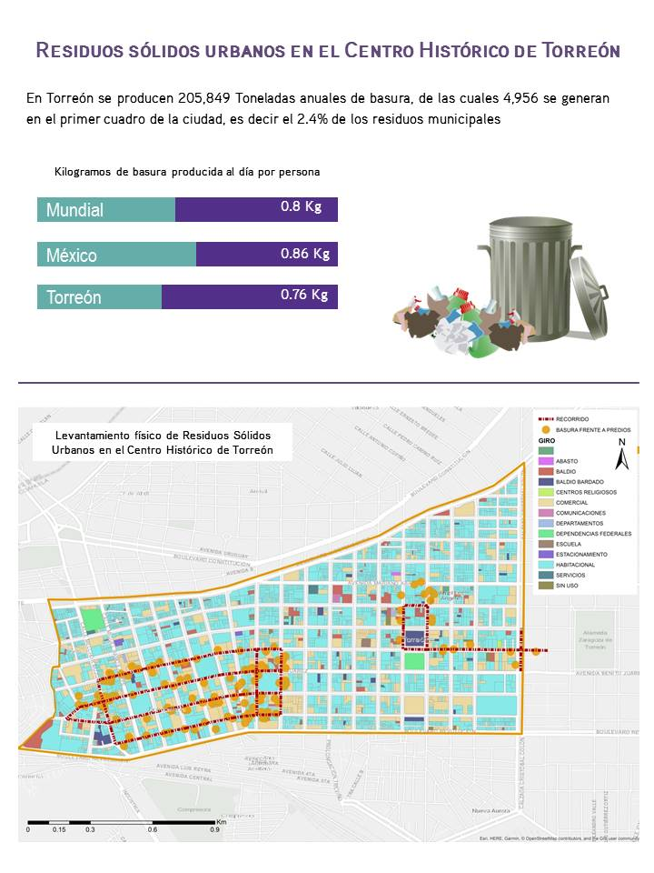

En Torreón se producen 205,849 toneladas anuales de basura, de las cuales 4,956 se generan en el primer cuadro de la ciudad, es decir el 2.4% de los residuos municipales de tipo basura doméstica y basura comercial se producen en el Centro Histórico de Torreón.
El pasado 1º. de octubre se celebró a nivel mundial el “Día Mundial del Hábitat” en el que ONU-Hábitat promovió políticas de desarrollo urbano sostenible para garantizar los asentamientos adecuados para todos. Este año el tema fue la gestión de residuos sólidos municipales.
En 2010 se estimó que diariamente se producían 0.8 kilogramos de residuos por cada persona en el mundo, y se espera que para el año 2025 la cantidad total de desechos generados se triplique y llegue hasta los 5,900 millones de toneladas anuales, debido al aumento en el consumo y a las estrategias ineficaces de gestión. (ONU-Hábitat, 2018). La mala gestión de los residuos sólidos tiene importantes implicaciones de salud pública, ya que es uno de los principales propagadores de enfermedades, atrae fauna nociva, afecta líneas de drenaje y genera una mala impresión para inversionistas y turismo.
En México se recolectan 0.86 Kilogramos de residuos por persona al día (INEGI), mientras que en Torreón, con una población estimada para 2018 de 716,672 habitantes, según proyecciones de CONAPO (2010), se generan 205,849 toneladas de basura anual (Dirección de Limpieza, 2018), es decir, que por habitante se producen aproximadamente 280 Kilogramos de basura al año o 0.76 Kilogramos de basura al día.
Una de las zonas más contaminadas por basura del municipio y que lo podemos ver reflejado en su imagen urbana es el Centro Histórico de Torreón. En este polígono se genera el 2.4% de la basura municipal.
Aunque este porcentaje pudiera parecer mínimo hay que tener en cuenta que la población estimada para 2018 en el polígono del Centro Histórico es de 6,821 habitantes (IMPLAN a partir de Proyección CONAPO, 2010). Si cada uno de estos habitantes produjera los 280 Kilogramos estimados para Torreón de basura al año, en el Centro Histórico se debería estar generando 1,909.88 toneladas anuales de basura y no las 4,956 estimadas por la Dirección de Limpieza para esta zona de la ciudad.
Este exceso en la generación de basura se relaciona principalmente con la gran actividad comercial que hay en el Centro Histórico, el cual concentra al 14.8% de las unidades económicas del municipio y que se conforma en un 40.7% de comercios dedicados a la venta al por menor.
Para reducir la cantidad de residuos de tipo doméstico y comercial que se generan en el Centro Histórico de la ciudad y mejorar no sólo su imagen sino la calidad de vida de sus habitantes, el Ayuntamiento de Torreón implementó desde el 1º. de octubre de 2018, el nuevo horario de recolección nocturna de Residuos Sólidos Urbanos en el primer cuadro de la ciudad.
Previo a esta implementación, el IMPLAN realizó un levantamiento físico en el polígono para poder dimensionar esta problemática y medir la efectividad del cambio de horario. El horario previo de recolección de basura en el Centro Histórico, y con el que se realizó este censo, era una primera unidad que recolectaba basura de lunes a sábado a partir de las 07:00 hrs y una segunda unidad que recolectaba basura en los mismos días a partir de las 15:00 hrs.
Para este levantamiento, se hicieron dos recorridos por las principales calles del Centro histórico (Av. Carranza, Hidalgo, Juárez y Morelos y las Calles Múzquiz, Blanco, Acuña, Rodríguez, Galeana y Ramón Corona).
Un primer recorrido a pie el 25 de septiembre de 2018 a las 11:00 hrs y un segundo recorrido de igual forma y fecha a las 18:30 hrs., con el objetivo de detectar que negocios tenían basura frente a sus predios fuera del horario de recolección de basura.
En este primer censo se pudo detectar que aproximadamente el 18% de los negocios del Centro Histórico tienen basura frente a sus predios fuera del horario de recolección, en el 58% de los negocios censados la basura generada es por la actividad del predio, el 23% es basura tirada indiscriminadamente por los peatones y el 18.2% es desperdicio de alimentos.
Uno de los principales objetivos del nuevo horario es entonces, que la basura que se encuentra fuera de los predios durante la horas en las que no hay actividad comercial en el Centro Histórico, no pase tanto tiempo a la intemperie, con el fin de evitar malos olores, fauna perniciosa o el esparcimiento de basura que incluso ha llegado a afectar de manera significativa la infraestructura para drenaje.
Es importante que todos los involucrados en las diversas actividades que se realizan en el Centro Histórico conozcan estos nuevos horarios y saquen la basura próxima al horario de recolección el cual se dividirá en:
Una primera unidad que abarca de Calzada Colón, Blvrd. Revolución a Blvrd. Independencia y termina en la Calle Treviño.
Una segunda unidad que abarca de la Calle Treviño de Blvrd. Revolución a Blvrd. Independencia, hasta la Calle Torreón Viejo, ambos en servicio a partir de las 21:00 hrs. de lunes a sábado, y los domingos el recorrido lo cubrirá una unidad a partir de las 14:00 horas empezando de Calzada Colón de Blvrd. Revolución a Blvrd. Independencia y terminando en la Calle Torreón Viejo.
Este es otro párrafo normal.
Se espera que con este nuevo horario y una participación activa y responsable de los ciudadanos que cohabitamos el Centro Histórico, se pueda reducir en gran medida la generación de residuos y sea un parteaguas en la implementación de estrategias que mejoren la gestión de los desechos urbanos municipales.
